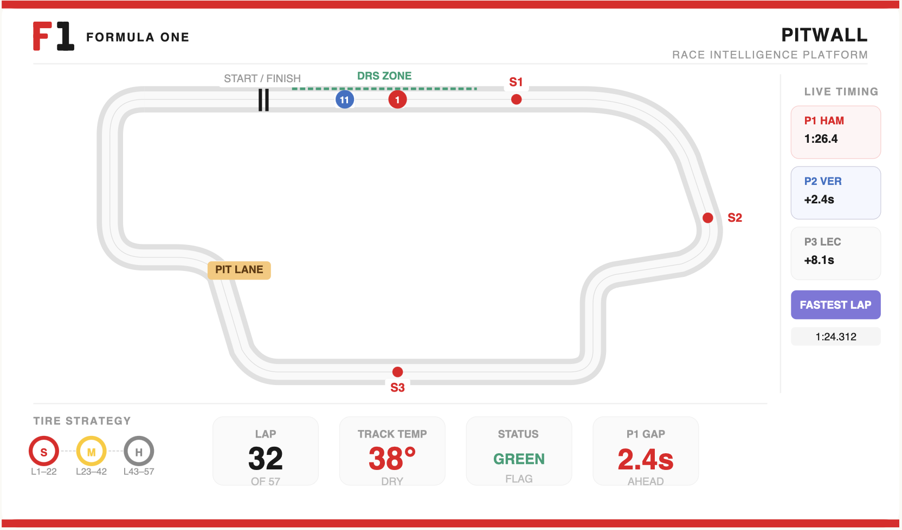
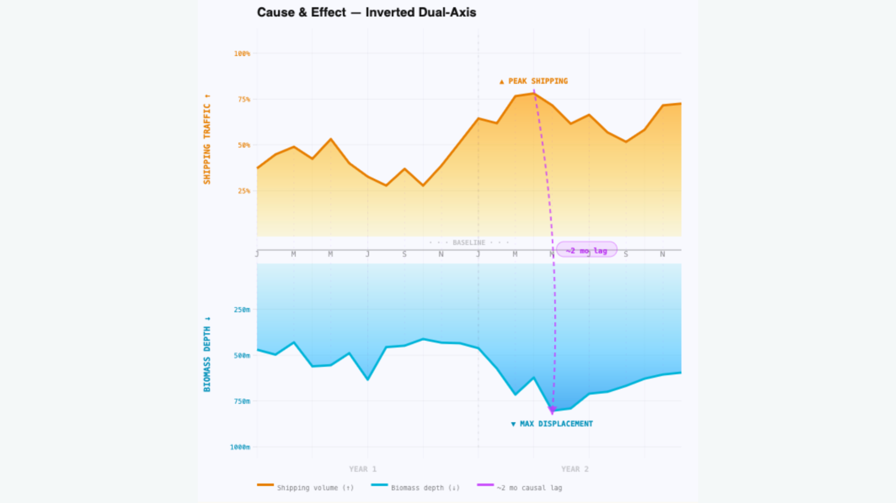
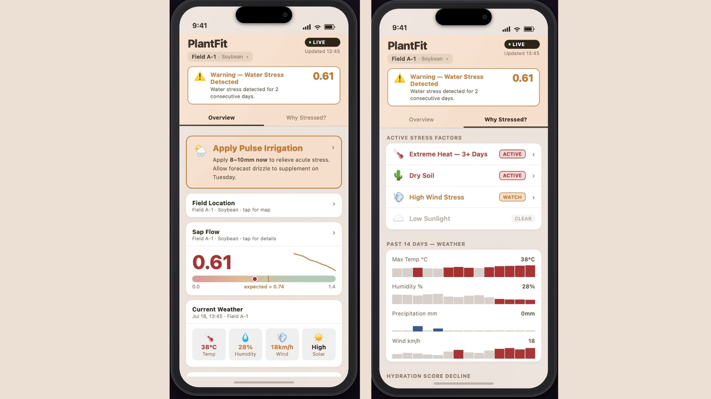
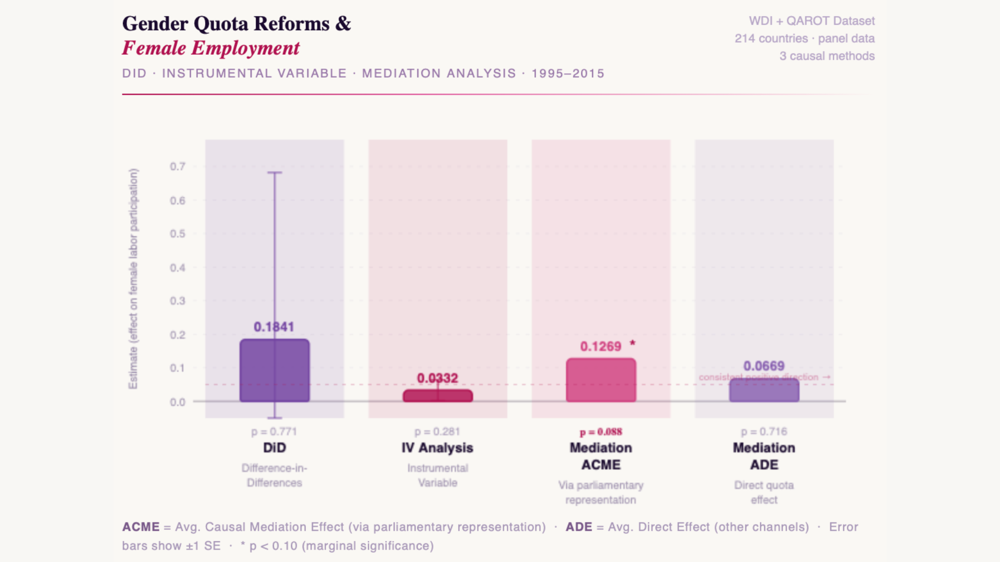
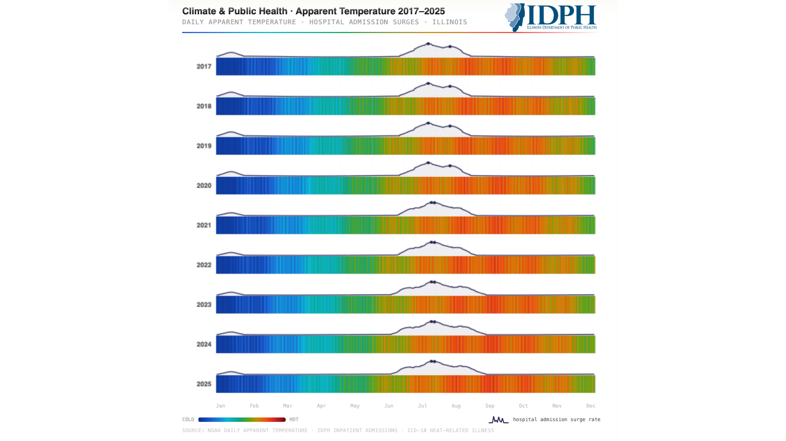
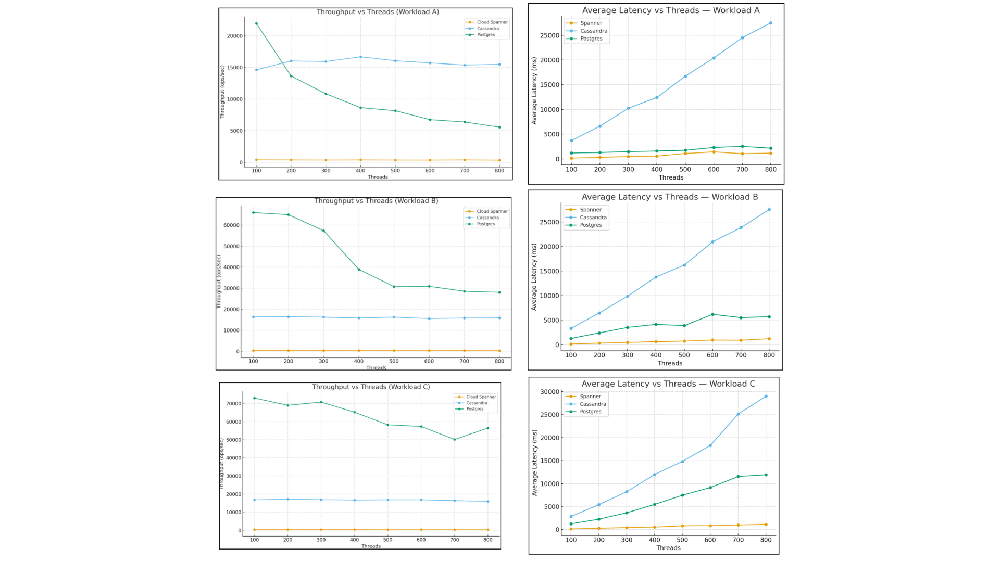
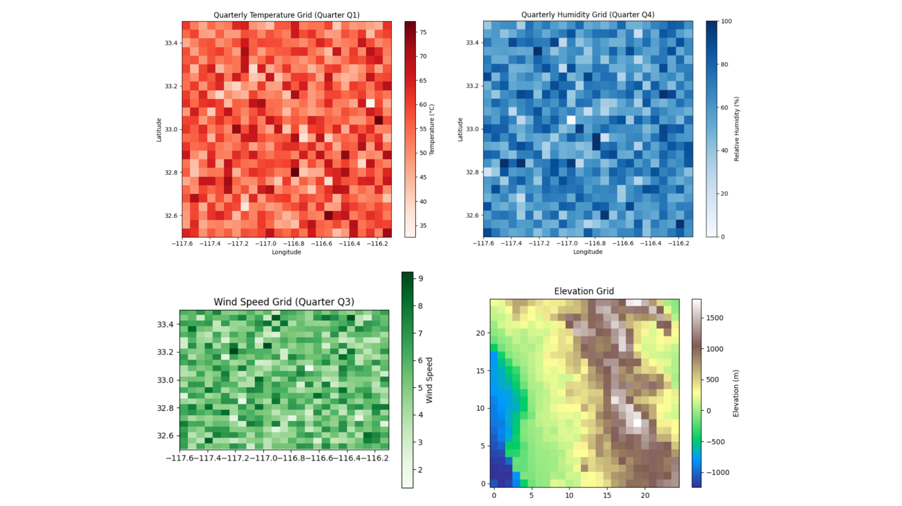
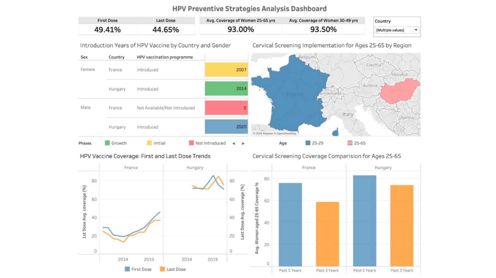
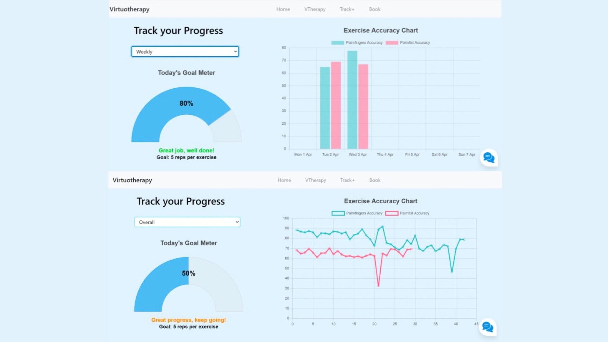
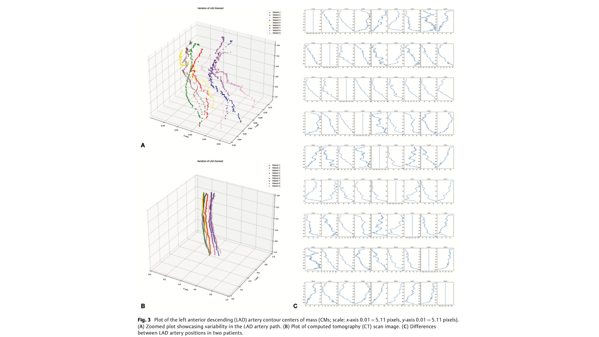

Priyal Maniar
From raw data to real decisions - pipelines, models and dashboards,
driven by a curiosity that doesn't really switch off.
A broad canvas, a lot of curiosity.
Data impacts every domain. Here are some I've worked across.
A few highlights along the way
Moments that shaped the journey
More tools, more possibilities.
Programming Languages
ML & AI
Data Engineering & Pipelines
Databases & BI
Statistical & Causal Analysis
Cloud, Tools & Product
The classrooms that shaped me.
Master of Science
Information Management
University of Illinois Urbana-Champaign · Illinois, USA
Aug 2024 - May 2026
CGPA 3.96 / 4.0
RELEVANT COURSEWORK
Fall 2024 · IS 507 Data, Statistical Models & Information · IS 515 Information Modelling · IS 525 Data Warehousing & Business Intelligence
Spring 2025 · IS 504 Sociotechnical Information Systems · IS 557 Applied Machine Learning · IS 597 Programming & Quality in Analytics
Fall 2025 · IS 497 Database Administration & Scaling · IS 534 Information Consulting · FIN 550 Big Data Analytics in Finance
Spring 2026 · IS 590 Causal Inference Machine Learning
Bachelor of Technology
Computer Science & Business Systems
Mukesh Patel School of Technology Management & Engineering · Mumbai, India
Aug 2020 - May 2024
TECHNICAL COURSEWORK
Software Engineering, Database Management Systems, Design & Analysis of Algorithms, Computational Statistics, Operations Research, Information Security, Artificial Intelligence, Machine Learning, Deep Learning, Data Mining & Analytics, Cognitive Science & Analytics, Text & Media Analytics
BUSINESS COURSEWORK
Business Communication & Value Science, Business Strategy, Fundamentals of Management, Financial Management, Marketing Management, IT Project Management, Industrial Psychology
Where curiousity drives impact.
Graduate Assistant for Inclusion Initiatives
- Coached over 100 graduate and undergraduate students on professional and career development.
- Conducted career development workshops, equipping students with tools to navigate professional landscapes and build profiles.
- Drove a 40% increase in student engagement through targeted outreach campaigns.
Data Analyst
- Designed and deployed 12+ Tableau dashboards spanning demand & inventory management, time series forecasting, and marketing impact, enabling data-driven operational decisions across the organization.
- Architected an end-to-end analytics infrastructure from scratch, designing a BigQuery data model and deploying a Google Analytics-BigQuery-Tableau reporting framework.
Graduate Researcher : Team Lead
- Leading a research team under Dr. Ian Brooks in collaboration with the Illinois Department of Public Health (IDPH).
- Exploring the effects of extreme heat on health outcomes across Illinois counties to aid public health planning.
- Identified the impact of environmental factors on public health risk and built predictive models using climate and health data (2017–2025).
Business Analytics Intern
- Drove the organization's largest strategic eCommerce initiative, leveraging Salesforce to map customer journeys, optimize user experience, and support direct revenue growth.
- Authored and presented user stories in Confluence, facilitating Agile backlog grooming and Scrum ceremonies to align Business and IT teams on feature delivery.
- Improved Finance Revenue Recognition process efficiency by 35% by mapping complex cross-functional workflows in Miro to identify and eliminate systemic gaps.
- Conducted end-to-end UAT for internal projects and co-developed a next-generation member acquisition strategy for executive leadership.
International Student Career Navigator
- Led a cohort of 7 international students through the Career Certificate – International (CCI) program, providing mentorship on career readiness and professional development.
- Facilitated career workshops and multi-cultural interactive group sessions.
Data Engineering Intern
- Automated data scraping and extraction pipelines to improve accessibility to government datasets for the India Data Portal (IDP).
- Processed 154,000+ records across 1,500 Excel workbooks — producing 4 published datasets and 20 codebooks through end-to-end data extraction, normalization, and integration.
Data Science Intern
- Analyzed customer demographics, financial behaviour, and loan performance data to identify sourcing trends across FY 2022–2023.
- Designed Tableau dashboards with KPI metrics for the Portfolio Management Team and presented insights to the Data Science executive team.
Undergraduate Researcher
- Evaluated the clinical feasibility of AI-based autosegmentation of the LAD artery to reduce manual contouring time, observer variability, and risk of cardiac complications in breast cancer radiotherapy.
- Studied and compared segmentation approaches: edge detection, region growing, atlas-based, and anatomical landmark methods on DICOM CT data from 9 patients.
- Engaged with radiotherapy workflows to define research requirements and translate complex clinical needs into actionable technical objectives.
- Presented findings to medical and technical stakeholders, effectively communicating complex AI methodologies to diverse audiences.
Build. Commit. Push.
- All
- Causal Analysis & Simulation
- Research and Publications
- Deep Learning and AI
- Machine Learning
- Dashboards
- Consulting

PitWall
Race strategy wins championships, and it's all in the data. Full season F1 telemetry from raw race data to strategic insights.
- Orchestrating ingestion of lap times, telemetry, pit stops, and tire strategy data via Airflow DAGs using the FastF1 API.
- Building a 3-layer dbt transformation architecture in Snowflake to model driver performance, tire degradation, and pit strategy outcomes.
- Designing Looker dashboards covering race pace analysis, pit stop strategy, tire degradation curves, and season standings.

Shipping Noise & Deep-Sea Migration
Causal analyis of commercial shipping noise on deep-sea species migration, isolating anthropogenic impact from natural variability.
- Combines AIS shipping route acoustic emission data with deep-sea hydrophone monitoring records and species migration datasets.
- Applies causal inference frameworks to panel data to separate the effect of shipping noise from confounding oceanographic and seasonal factors.
- Informs ESG frameworks and marine conservation policy by quantifying the environmental cost of commercial shipping noise.

PlantFit — Precision Irrigation
Forecast crop water stress and requirements using plant physiological and real-time environmental data.
- Built multimodal pipelines integrating sap flow sensors, Sentinel-2 NDVI satellite imagery, NOAA weather feeds, and OpenET evapotranspiration data.
- Designed yield-zone classification from 5 years of NDVI data to optimise sensor deployment cost and field coverage.
- Engineered a Normalized Sap Flow Index (NSFI) for real-time stress detection and trained a Random Forest model for 48-hour irrigation forecasting.

Gender Policy & Labor Market Analysis
Does putting more women in parliament actually improve female employment or is it just a signal? 20 years of data across 214 countries answers it.
- Modelled panel data using a Difference-in-Differences framework with within-demeaning and clustered standard errors to control for unobserved country characteristics.
- Designed a Two-Stage Least Squares IV model with time-varying controls including log-GDP per capita to isolate true policy impact from economic growth.
- Causal Mediation Analysis revealed labor market outcomes are more strongly driven by increased female legislative representation than by quota adoption as a signal alone.

Extreme Heat & Public Health Outcomes
Impact of extreme heat on hospital visits across Illinois counties using real-world climate and health data from 2017–2025.
- Integrated geospatial ERA5 climate data with county-level hospital visit records to model the relationship between heat events and health outcomes including GI infection spikes.
- Evaluated multiple heat metrics beyond conventional heat index including Wind Chill Factor, Apparent Temperature, and Humidex to identify the strongest predictors of health impact.
- Built predictive models to forecast healthcare demand for climatic conditions, aiding public health planning across Illinois.

MultiCloud Database Benchmarking
Benchmarking study comparing PostgreSQL on AWS RDS, Apache Cassandra and Google Spanner under real-world OLTP conditions.
- Responsible for AWS RDS and Azure PostgreSQL benchmarking setup using Yahoo Cloud Serving Benchmark, executing stress tests scaling from 100 to 800 concurrent threads across update-heavy, read-mostly, and read-only workloads.
- Analyzed max throughput (ops/sec) and p95/p99 tail latencies to identify concurrency limits and queuing bottlenecks.
- Synthesized cost-performance tradeoffs to produce architectural and service-based recommendations for enterprise database selection.
AI Retail Tech Consulting
2.7x projected reduction in reverse logistics costs, diagnosing the $400B+ retail returns problem and designing two privacy-first AI products to solve it.
- Conducted primary and secondary market research, competitive analysis, and PESTLE to identify fit uncertainty and consumer distrust as the core drivers of 20 to 40% e-commerce return rates.
- Performed technical feasibility analysis for CV-based sizing (FitSense) and generative AI outfit recommendation (StyleFlow) within retail infrastructure and privacy constraints.
- Delivered an 18-month, 3-phase rollout roadmap with financial modelling targeting higher AOV and reduced reverse logistics costs.

Wildfire Spread Simulation
Statistically validated fire behavior under real environmental conditions by modeling stochastic wildfire spread across San Diego County.
- Built environmental data pipelines from NASA FIRMS (ignition points 2012–2025), NOAA weather stations, and OpenTopography elevation data.
- Ran 1,200 Monte Carlo simulations per condition; hypothesis testing confirmed statistically significant effects of humidity and vegetation density on burned area.
- Optimized runtime with Numba-accelerated computation and parallel multiprocessing.

HPV Global Vaccination & Prevalence
Dashboards to identify systemic gaps in global HPV prevention, using data from 40+ countries and 50 U.S. states for health policymakers.
- Designed 4 interactive dashboards covering prevalence, vaccination coverage, and socioeconomic disparities using data from the HPV Information Centre and CDC.
- Segmented U.S. vaccination coverage by socioeconomic factors, revealing poverty, race, urbanicity, and insurance status as key drivers of geographic disparities.
- Identified age-based risk progression underscoring the window for early vaccination.

VTherapy - Hand Rehabilitation System
VTherapy brings real-time post-injury hand rehabilitation to any device, reducing in-person physiotherapy visits.
- Built a custom ResNet-LSTM model trained on a physiotherapist-curated dataset for real-time exercise classification using MediaPipe skeletal tracking.
- Integrated Dynamic Time Warping for movement precision scoring, progress monitoring, and a PhysioBot NLP chatbot.
- Dockerised Flask deployment for consistent cross-environment execution.

Auto-Segmentation in Radiotherapy
LAD artery auto-segmentation to reduce manual contouring time, observer variability, and cardiac complication risk in breast cancer radiotherapy.
- Compared edge detection, region growing, atlas-based, and anatomical landmark approaches on DICOM CT data from 9 patients; identified landmark-based method as most clinically promising for auto-segmentation of the LAD artery.
- Translated healthcare knowledge and radiotherapy workflows into technical research direction while engaging closely with doctors and radiologists.
- Presented findings to both technical and medical stakeholders, bridging clinical needs and AI methodology for diverse audiences.

Predictive CRM Analytics for Google Pay
Identify the behavioral and demographic drivers of marketing campaign success for Google Pay among college consumers.
- Implemented and compared 4 ML classifiers — Decision Tree, Random Forest, Logistic Regression, and SVM.
- Built predictive models on survey data from 100 students to evaluate offer likeability and predict campaign response behavior.
- Designed a Tableau dashboard to visualize campaign success drivers and translate model outputs into marketing insights.
Beyond the desk.
President
4C: The Marketing Cell of NMIMS
June 2022 - May 2023
Led 85+ students in NMIMS University's Marketing Cell, organizing marketing events and workshops.
Organised a Leadership and Marketing Conclave with 400+ attendees, featuring leading industry leaders in a panel discussion.
Volunteer
Rotaract Club
May 2021 - May 2022
Participated in a food donation drive.
Assisted in the editorial department with content creation for club activities.
Contributed to various social service initiatives, supporting community welfare efforts.
Trinity College of London
Music Certifications
2018 - 2019
Theory of Music
- Grades 1 & 2: Distinction — Foundation in musical structure and composition.
Rock & Pop Guitar (Practical)
- Initial Level: Distinction
- Grades 1 & 2: Merit — Technical mastery and performance execution.

Say hello.
Whether it's a job opportunity, a project idea, or just a conversation my inbox is always open!
Champaign, IL
Available for opportunities starting Summer 2026